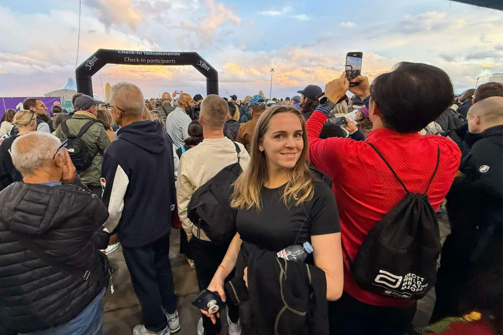
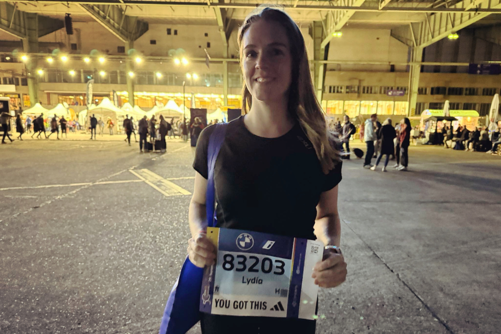
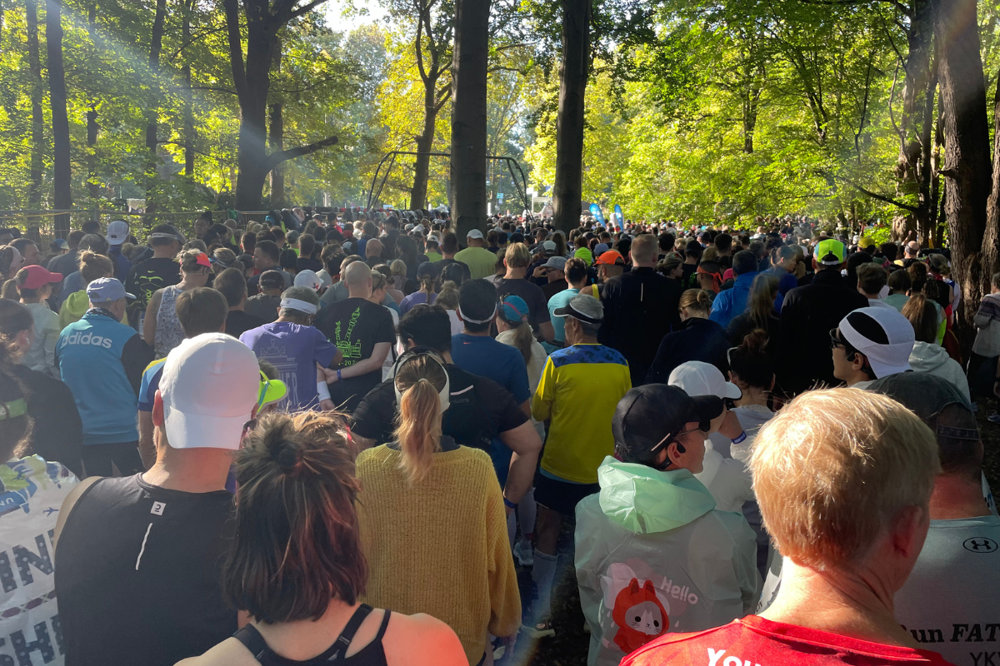
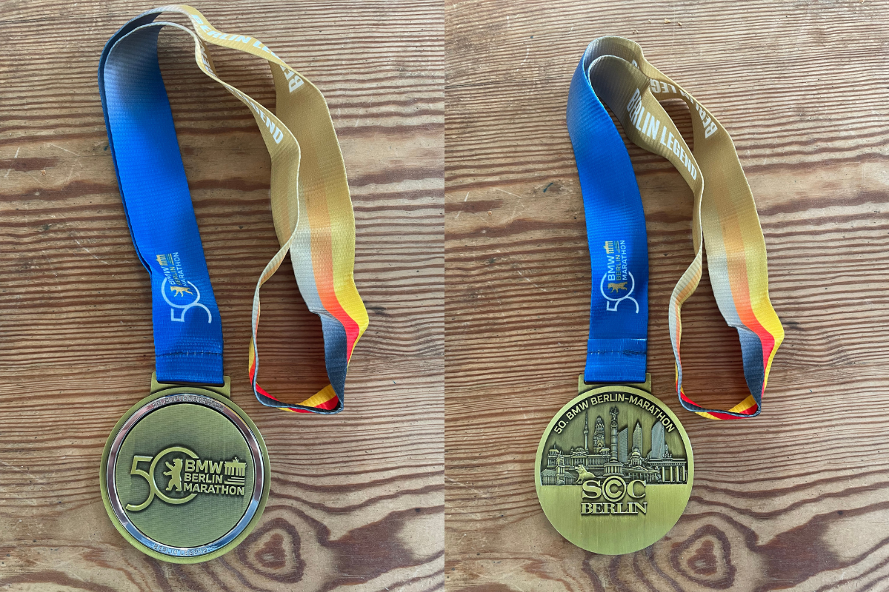

Berlin Marathon 2024
My Experience
The Berlin Marathon was a huge deal for me. I applied through the lottery, knowing I didn’t have the qualifying times to enter as a fast runner. At first, I wasn’t selected, which was disappointing but not surprising. Then, out of the blue, four months later, I got an email offering me an entry ticket. Of course, I jumped at the opportunity. That left me with six months to prepare for the race.
About 3-4 months before race day, I ramped up my training. I’d already been running regularly, but this was when the real marathon prep began. I increased my weekly mileage, built up my long runs, and incorporated tempo work. The training went well overall, but I’d be lying if I said it was all fun. The long runs on Saturdays, often 3-4 hours by myself, were mentally draining. My running group has a Saturday morning run at 9 a.m., but that’s just too early for me. So, it was usually just me and the road, which didn’t make those long runs any easier.
As race day approached, I flew to Berlin feeling prepared but nervous. The expo was overwhelming—an experience in itself. It took over an hour of standing in lines to get my race bib and kit, and by the time I was done, I had no energy left to browse the vendors. I just wanted to get off my feet as quickly as possible, worried I’d tire out my legs before the race even began.
 Race Day
I managed to get a decent night’s sleep before the marathon, which was a relief. For breakfast, I stuck to what I know works for me: oatmeal with banana, plus toast with cheese and jam. I also made sure to drink plenty of water with electrolytes. The walk to the start line took about half an hour, and the closer I got, the more crowded it became. It was chaotic. The lines for the portable toilets stretched forever, making them impossible to use. Like many others, I had to duck behind a bush. Not exactly glamorous, but it did the job.
At the starting corral, I made what turned out to be a costly mistake. I ended up in a corral that was slower than my goal pace, and I couldn’t push my way to the front. I didn’t think much of it at the time—just assumed I’d be able to make my way through the crowd once the race started. I was wrong.
This was my third marathon. My personal best was 4:02 from the Munich Marathon the year before, and I was determined to break the 4-hour barrier this time. But as soon as the race began, I realized the crowd wasn’t starting fast like they usually do. Instead, I found myself stuck running at a pace of around 6:00 per kilometer, far slower than the sub-5:40 pace I needed to reach my goal. I kept trying to weave through the crowd, speeding up when I could, only to hit another wall of runners and have to slow down again. This stop-start pattern went on for the first 12 kilometers, and it was both frustrating and exhausting. By that point, I was already worn out and decided to let go of my goal time. I slowed down, settled into the pace of those around me, and decided to just enjoy the experience.
The Race Experience
Once I stopped fighting the crowd, I could finally take in the atmosphere, and it was incredible. The streets of Berlin were lined with spectators cheering us on, and there was music everywhere. The energy was infectious. Since I wasn’t pushing for a time anymore, I took my time at the aid stations, grabbing water, electrolytes, and even some bananas. I had my High5 gels with me and took one every 45 minutes or so, along with some candy I’d stashed in my pocket.
At the halfway mark, I attempted to use one of the portable toilets, but the lines were as bad as they’d been before the race. I gave up and kept going. Despite all the challenges, I was feeling much better than I’d expected. In my previous marathons, I’d hit the wall hard around kilometer 30. This time, it didn’t happen. Maybe it was because I was running at a slower pace, but I felt steady and in control the entire race. Of course, I was tired—how could I not be?—but it was a manageable fatigue.
The Finish Line
As the kilometers ticked by and the Brandenburg Gate came into view, I realized I still had some energy left. I picked up the pace slightly but was still hemmed in by the crowd. A few hundred meters from the finish line, I spotted my boyfriend, which gave me an extra burst of motivation. I sprinted the final stretch as best I could, crossing the finish line with a time of 4:17. It was my slowest marathon to date, but I didn’t care. I’d finished, and the experience had been unforgettable.
After collecting my beautiful medal, I shuffled through the crowd to pick up my post-race goodies and was handed a thick poncho to keep warm. That poncho was a lifesaver on the half-hour walk back to my hotel.
Reflections
The Berlin Marathon was an incredible experience. The energy, the spectators, the music—everything about it was amazing. But the crowds were overwhelming, both at the start and throughout the course. I made a tactical mistake by not positioning myself better in the starting corral. If I’d gotten there earlier and fought my way to the front, I might have had a better shot at my goal time. On the other hand, standing in the corral for an extra 30-45 minutes would’ve meant needing the bathroom again before the race even started, so I’m not sure what the right answer would’ve been.
Overall, I’m proud of my race. I learned a lot about myself as a runner and enjoyed the journey despite the challenges. That said, I think I’ll stick to smaller marathons in the future. The intimacy and space to run your own race appeal to me more than the sheer spectacle of a major event like Berlin. Still, it’s an experience I’ll always treasure.